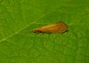

limnephilidae

Definition: Limnephilidae is a family of caddisflies with about 100 genera. They belong to the main lineage of case-constructing caddisflies, the Integripalpia or tube-case caddisflies. The Limnephilidae is one of the most species-rich Trichoptera families of northern temperate regions, but only a few are known from tropical areas and the Southern Hemisphere. For this reason they are often known as northern caddisflies.
Source: Wikipedia
Wikipedia Page
Wikidata Page